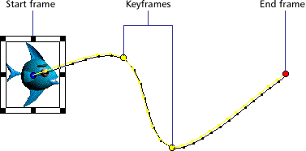
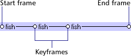

Using Director > Animation > About tweening in Director
Using Director > Animation > About tweening in Director |
About tweening in Director
To use tweening in Director, you define properties for a sprite in frames called keyframes and let Director change the properties in the frames in between. Tweening is very efficient for adding animation to movies for Web sites, since no additional data needs to download when a single cast member changes.
A keyframe usually indicates a change in sprite properties. Properties that can be tweened are position, size, rotation, skew, blend, and foreground and background color. Each keyframe defines a value for all of these properties, even if you only explicitly define one.

